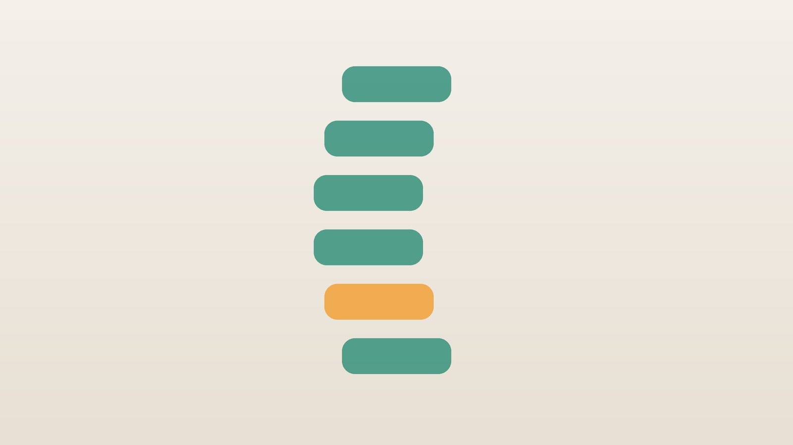

건강 칼럼 · 허리·골반 통증 · 인천 허리디스크 한의원
허리에서 다리까지 저릿하다면, 허리디스크 비수술 한방 치료

허리디스크 자가 점검
- 허리를 숙이거나 오래 앉으면 통증이 심해진다
- 엉덩이에서 허벅지 뒤, 종아리로 저림이 뻗친다
- 기침이나 재채기를 하면 허리와 다리가 울린다
- 누워서 다리를 들어 올리면 다리가 당긴다
- 한쪽 다리에 힘이 빠지는 느낌이 든다
이 체크리스트는 진단 도구가 아니라 상담이 필요한지 가늠해 보는 참고용입니다.
허리디스크란 무엇인가요?
허리뼈 사이에서 쿠션 역할을 하는 디스크가 반복된 부담이나 갑작스러운 충격으로 밀려 나오면 주변 신경을 자극합니다. 오래 앉아 일하는 사무직, 무거운 물건을 반복해서 드는 직업, 운동 부족으로 허리 주변 근력이 약한 경우에 특히 잘 생깁니다.
미국내과학회(ACP) 진료지침은 급성·만성 요통에 대해 약물보다 먼저 열 찜질, 운동, 침 치료 같은 비약물 치료를 우선 고려하도록 권고합니다. 디스크로 인한 통증은 상당수가 시간이 지나며 좋아지므로 초기 관리가 중요합니다.
수술이나 응급 진료가 필요한 신호
- 소변이나 대변을 보기 어렵거나 참지 못한다
- 항문 주변과 엉덩이 안쪽 감각이 둔해졌다
- 발목이나 발가락에 힘이 빠져 발을 끌며 걷는다
- 열이 나면서 허리 통증이 심해진다
- 암 병력이 있거나 체중이 이유 없이 줄었다
이런 신호는 신경이 심하게 눌렸거나 다른 질환일 수 있어 즉시 응급실이나 척추 전문 진료를 받으세요.
한의학의 요통(腰痛)
한의학에서는 '허리는 신의 집(腰爲腎之府)'이라 하여 허리를 신(腎)의 기운이 머무는 곳으로 보았습니다. 그래서 오래된 요통은 신의 기운이 약해져 허리를 받치지 못하는 것으로 이해했습니다.
반면 갑자기 생긴 요통은 무거운 것을 들다 다쳐 혈이 정체된 어혈요통, 비 오는 날이나 추운 날 심해지는 한습요통처럼 바깥 원인으로 보았습니다. 다리로 뻗치는 저림은 앞서 말한 비증의 하나로, 허리에서 다리로 이어지는 경락이 막힌 것으로 설명합니다.
나는 어떤 유형의 요통일까?
1. 어혈요통(瘀血腰痛) 다쳐서 찌르는 유형
- 이런 분에게 많아요
- 무거운 것을 들거나 삐끗한 뒤 생긴 분
- 나타나는 모습
- 한 지점이 찌르듯 아프고 움직이면 심하다
- 함께 오는 몸의 신호
- 밤에 악화, 고정된 통증
- 진찰에서 보이는 모습
- 혀에 어두운 반점
- 치료 방향
- 정체된 혈을 풀어 주는 방향 (활혈 위주의 처방)
- 오늘부터 해 볼 것
- 초기에는 무리하게 스트레칭하지 마세요.
2. 한습요통(寒濕腰痛) 비 오고 추우면 심한 유형
- 이런 분에게 많아요
- 찬 바닥에 오래 앉거나 습한 환경에 있는 분
- 나타나는 모습
- 허리가 무겁고 차며 비 오는 날 심해진다
- 함께 오는 몸의 신호
- 다리 무거움, 손발 냉증
- 진찰에서 보이는 모습
- 설태가 희고 미끄러움
- 치료 방향
- 찬 기운과 습을 몰아내는 방향 (오적산 계열)
- 오늘부터 해 볼 것
- 허리를 따뜻하게 하고 찬 바닥에 앉지 마세요.
3. 습열요통(濕熱腰痛) 뜨겁고 무거운 유형
- 이런 분에게 많아요
- 술과 기름진 음식이 잦은 분
- 나타나는 모습
- 허리가 뜨겁고 무거우며 더운 날 심하다
- 함께 오는 몸의 신호
- 소변이 진함, 입이 씀
- 진찰에서 보이는 모습
- 설태가 누렇고 끈적함
- 치료 방향
- 습과 열을 걷어 내는 방향 (사묘환 계열)
- 오늘부터 해 볼 것
- 술을 줄이고 체중을 관리하세요.
4. 신허요통(腎虛腰痛) 오래되어 힘이 없는 유형
- 이런 분에게 많아요
- 중장년 이후, 요통이 오래된 분
- 나타나는 모습
- 허리가 시큰하고 힘이 없으며 쉬면 나아진다
- 함께 오는 몸의 신호
- 무릎 시큰함, 쉽게 피로
- 진찰에서 보이는 모습
- 맥이 가늘고 약함
- 치료 방향
- 허리를 받치는 힘을 기르는 방향 (독활기생탕 계열)
- 오늘부터 해 볼 것
- 복부와 엉덩이 근력 운동을 꾸준히 하세요.
한의원에서는 어떻게 진찰하나요?
- 움직임 평가: 허리를 숙이고 젖히고 돌릴 때의 통증과 다리 저림을 확인합니다.
- 신경 확인: 다리 들어 올리기 검사, 발목·발가락 힘과 감각을 확인합니다.
- 영상 결과: MRI나 엑스레이 결과가 있으면 함께 봅니다.
- 설진·맥진: 어혈, 찬 기운, 습열, 허약의 비중을 판단합니다.
침·약침·한약 치료는 어떻게 하나요?
1. 침 치료
- 신수(腎俞)·대장수(大腸俞): 허리 양옆. 허리 통증의 기본 혈입니다.
- 요추 협척혈: 허리뼈 양옆. 신경이 눌린 높이에 맞춥니다.
- 위중(委中): 오금 한가운데. '허리와 등의 병은 위중에서 구한다'는 말이 전해집니다.
- 양릉천(陽陵泉): 종아리 바깥쪽 무릎 아래. 다리 저림에 씁니다.
2. 약침·초음파 가이드 약침
약침은 일반 약침과 초음파 가이드 약침을 모두 시행하며, 아픈 부위의 깊이와 주변 구조에 따라 진찰 후 골라 씁니다. 초음파 가이드 약침은 초음파 화면으로 바늘 끝을 확인하면서 놓는 방식입니다. 허리 깊은 곳의 다열근과 후관절 주변을 초음파로 보면서 놓아 원하는 깊이에 약액이 닿게 합니다. 신경이 눌린 높이의 허리뼈 주변 경혈에 약침을 적용해 신경 주변 염증과 깊은 근육의 경직을 완화합니다. 디스크나 협착증으로 수술을 권유받았더라도 다리 힘이 크게 빠지는 마비나 대소변 장애가 없다면, 초음파 가이드 약침과 추나 같은 비수술 치료로 증상 완화와 통증 관리를 먼저 해 볼 수 있습니다.
3. 한약
유형별 처방으로 염증, 찬 기운, 근골의 약함을 다스립니다. 한약은 원장이 원내 탕전실에서 약재 선별부터 달이는 과정까지 직접 관리하며, 10일분씩 처방해 복용 경과를 보고 약재 구성과 양을 조절합니다. 아픈 자리는 초음파 가이드 약침과 추나로 다스리고, 통증이 오래가게 만드는 몸속의 기혈 순환과 장부 기능은 체질에 맞춘 한약으로 함께 살피면 통증 완화와 재발 관리를 함께 도모할 수 있습니다.
4. 추나 요법
골반과 허리의 정렬이 틀어져 있다면 통증 단계에 맞춰 추나 요법을 함께 시행합니다.
원장님이 네이버 블로그에 진료 이야기와 건강 정보를 꾸준히 올리고 있습니다. 더 많은 이야기는 블로그에서 확인해 보세요.
블로그 보기치료는 어떤 순서로 진행되나요?
- 급성기 통증이 심한 첫 1~2주는 염증과 통증을 줄이는 데 집중하고, 편한 자세로 쉬되 오래 눕지는 않습니다.
- 회복기 통증이 견딜 만해지면 짧은 산책부터 움직임을 늘리고 운동을 더합니다.
- 강화기 복부와 엉덩이 근력을 길러 허리를 받쳐 줍니다.
- 유지기 재발을 막는 자세와 운동을 습관으로 만듭니다.
통증이 아주 심한 첫 하루 이틀은 쉬는 것이 좋지만, 오래 누워만 있으면 근육이 약해져 회복이 늦어질 수 있습니다.
허리를 지키는 일상 자세
- 물건 들기: 허리를 숙이지 말고 무릎을 굽혀 몸 가까이 들어 올립니다.
- 앉기: 엉덩이를 깊숙이 넣고 허리 뒤에 쿠션을 댑니다.
- 휴식: 30분 이상 앉아 있었다면 일어나 가볍게 걷습니다.
- 근력: 복부와 엉덩이 근력 운동을 꾸준히 합니다.
- 보호대: 통증이 심한 초기에만 잠시 쓰고, 회복에 맞춰 줄여 갑니다.
다른 진료가 먼저인 경우
- 대소변 장애, 항문 주변 감각 저하, 발 힘 빠짐이 있으면 즉시 응급실로 가세요.
- 열과 함께 허리 통증이 심하면 감염을 확인해야 합니다.
- 옆구리 통증과 혈뇨가 있다면 신장 결석 등을 확인하세요.
자주 묻는 질문 Q&A
- Q1. 허리디스크는 저절로 낫기도 하나요?
- 밀려 나온 디스크가 시간이 지나며 줄어들어 좋아지는 경우가 많습니다. 그동안 통증을 줄이고 회복을 돕는 치료가 필요합니다.
- Q2. 신경주사를 맞고 있는데 침 치료도 받을 수 있나요?
- 병행할 수 있습니다. 받은 치료의 날짜와 종류를 알려 주세요.
- Q3. 치료 기간은 얼마나 걸리나요?
- 보통 2~6주 동안 통증과 다리 저림의 변화를 확인하며 진행합니다.
- Q4. 허리 보호대를 계속 차도 되나요?
- 오래 차면 근육이 약해질 수 있어 회복에 맞춰 줄여 갑니다.
- Q5. 운동은 언제부터 해도 되나요?
- 급성 통증이 줄면 걷기부터 시작해 단계적으로 늘립니다.
- Q6. 수술한 뒤에도 한방 치료를 받을 수 있나요?
- 수술 후 회복 시기와 담당 의사의 안내를 확인한 뒤 진행합니다.
- Q7. 딱딱한 바닥에서 자는 게 좋은가요?
- 너무 딱딱하거나 푹 꺼지는 곳보다 몸을 고르게 받쳐 주는 매트리스가 좋습니다.
- Q8. 임신 중 허리 통증도 치료할 수 있나요?
- 임신 주수와 상태를 확인한 뒤 피해야 할 부위를 제외하고 안전한 범위에서 진행합니다.
문원열 대표원장한의사 · 365스마일한의원
임상 경력 15년, 인천 서구 가정동에서 개원 후 10년째 진료하고 있으며, FCST 턱관절학회·연부조직학회·침도학회 등에서 활동합니다. 아픈 곳만이 아니라 증상의 원인을 찾아 진료합니다.
진료 안내
- 진료시간
- 평일 09:00~20:00 (점심시간 13:00~14:00, 접수 마감 19:30)
토·일·공휴일 09:00~15:00 (접수 마감 14:30) - 주소
- 인천광역시 서구 가경주로 46, 2층 (가정동)
인천2호선 가정중앙시장역 인근
영상으로 길 안내 보기 → - 주차
- 한의원 건물 바로 앞 1층 도원주차장
- 예약
- 예약 바로가기 또는 전화 예약
진료시간은 사정에 따라 바뀔 수 있으니 방문 전 전화로 확인해 주세요.
참고 자료
- Qaseem A, et al. Noninvasive Treatments for Acute, Subacute, and Chronic Low Back Pain: A Clinical Practice Guideline From the American College of Physicians. Annals of Internal Medicine, 2017 — 원문
- 질병관리청 국가건강정보포털 — 원문
※ 이 글은 일반적인 건강 정보이며, 개인의 상태에 따라 치료 방법과 결과는 다를 수 있습니다. 정확한 진단과 치료는 진료를 통해 결정됩니다. 침·약침 시술 후 드물게 멍, 통증 등이 생길 수 있습니다.